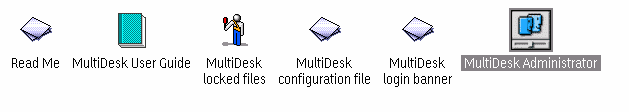

This is a beta release, so the usual disclaimers
apply. Also please note that this program messes with your desktop and
INI files, so PLEASE make a backup before installing/using it. Even
if I tested thoroughly the program and found no dangerous situations, it's
always better to be safe than sorry.
Actually, it does something more: it presents you with a login screen
at boot time, and when a user is recognized it can:
NOTE: MultiDesk offers some mild security features. While
this features will probably improve in the future, don't expect too much
from this: every user with enoguh skills and knowledge of OS/2 can bypass
it. I'm not going to use SES (at least for now) because it is too buggy
at this stage.
The µDesk package includes two programs: µDesk itself,
which manage logins,
and µAdmin, which manage user/desktop pairs.
µDesk is very easily configured through a simple text file, with
few options.
A sample configuration file is included,
with tons of comments.
µAdmin don't need any configuration,
and will instead help you (the
administrator) to create/manage the users and their desktops.
Here are the contents of the folder as created by the installation package:
